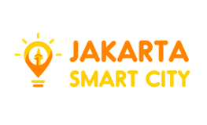

During my sophomore year, I took a module called HCI. It exposes me with a lot of things I never knew before. User experience, usability, how an interface can hinder users in reaching their goals, etc. It really excites me knowing there is a field that studies how people interact with systems and products.
Ever since, I read books and articles around UX research and design. Secured my first internship at a Government body named Jakarta Smart City and was asked to managed other 5 UX intern since the PM felt that I had most knowledge on UX compared to the other guys in the team. After that, I managed to get another internship at an Indonesian unicorn, GO-JEK. From that place, my knowledge on research and UX on scale just grew exponentially.
Now, I’m doing several side projects handling the design and research. It is still enlightening to me to got insights every time we conduct usability test or user research. The excitement of seeing the user, improving the product and the iteration. It’s really cool.
Conducted usability testing, competitor reviews for the driver application. Initiated a research on driver fraud which led to a loophole found in our own system. Supported a foundational research project with our UX Research lead.
Led 5 other interns on a project to create a new government website of Jakarta with an improved experience. Conducted usability testing, card sorting, tree testing and delivered the final wireframes before handing the project over to the UI Designer.
Assisted the team to clarify Software Requirements Specification of the project with users and developers. Provide support in UAT and SIT of the software.